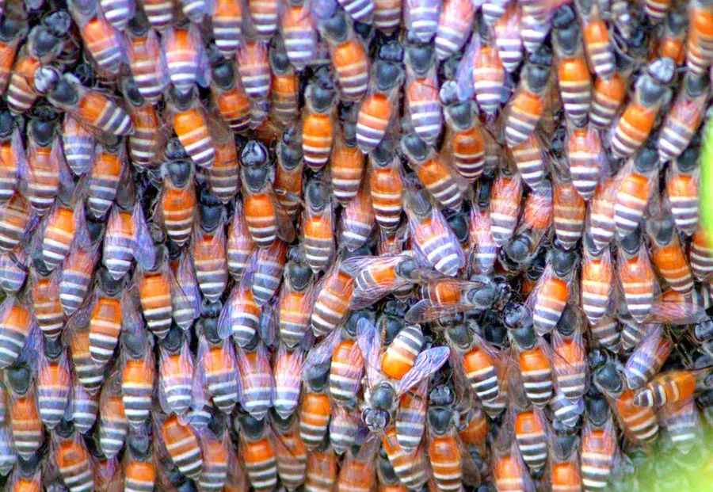

昆虫 · 动物界
小蜜蜂 Apis florea

世界上体型最小的蜜蜂之一，蜂巢建在灌木枝条上，常只有手掌大小，分布于亚洲热带地区。
- 分类
- 门节肢动物门纲昆虫纲目膜翅目科蜜蜂科属蜜蜂属
- 栖息环境
- 亚洲热带、亚热带灌丛、草地和低矮树枝，筑巢于枝条上
- 地理分布
- 中国南方、东南亚、印度和中东部分地区
- 保护级别
- 暂无评估
物种志
小蜜蜂工蜂体长约 0.7–1 cm，是世界上体型最小的蜜蜂之一，体色黄褐，腹部有浅色环带，体毛短而稀疏。蜂王和雄蜂体型稍大，蜂群规模通常只有几千只，比家养的蜜蜂小得多。
它分布在亚洲热带和亚热带地区，常在灌木枝条、草丛和低矮树枝上筑单个裸露的蜂巢，巢脾只有手掌大小，包裹着树枝。小蜜蜂采集多种野花的花蜜和花粉，在生态系统中是重要的传粉者。它的蜂巢小、蜂蜜产量低，但蜜味香甜，当地居民有时会采集。小蜜蜂性情温和，一般不主动攻击人，但受到惊扰时也会群起防卫，观察时应保持距离。
形态与习性
- 食性采集野花的花蜜和花粉，是重要传粉者
- 体长工蜂约 0.7–1 cm，是最小的蜜蜂之一
- 筑巢在灌木枝条上筑单个裸露的小蜂巢
- 蜂群群体通常只有几千只
- 分布亚洲热带和亚热带地区
趣味知识
- 小蜜蜂工蜂只有 1 厘米左右，是世界上最小的蜜蜂之一。
- 它的蜂巢只有手掌大小，包在低矮的灌木枝条上。
- 小蜜蜂性情温和，但受到惊扰时也会群起防卫，观察时要保持距离。